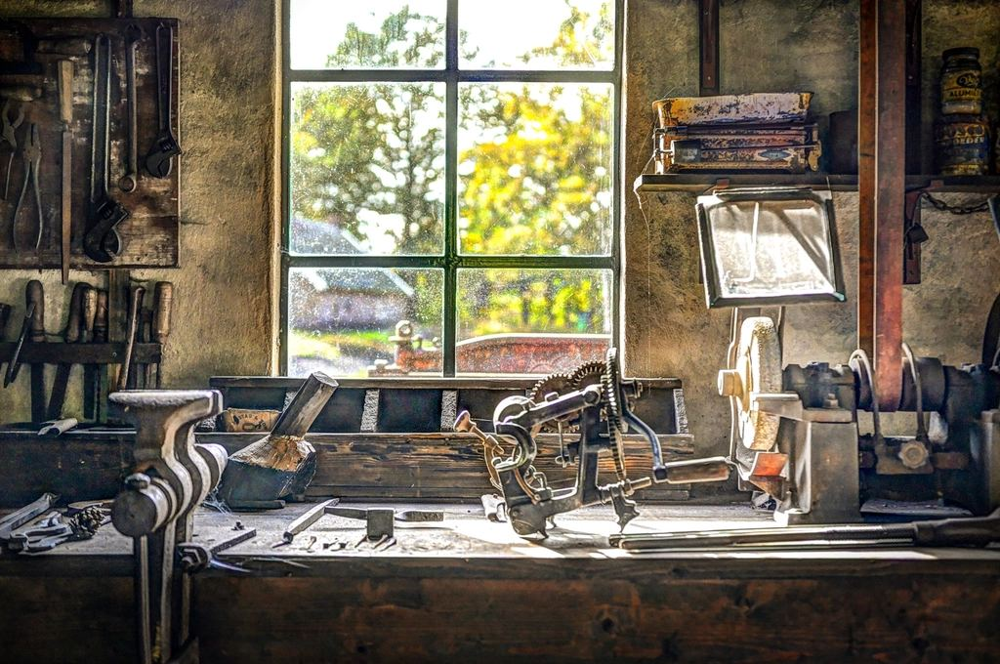
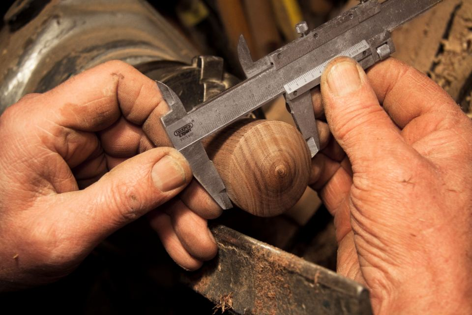
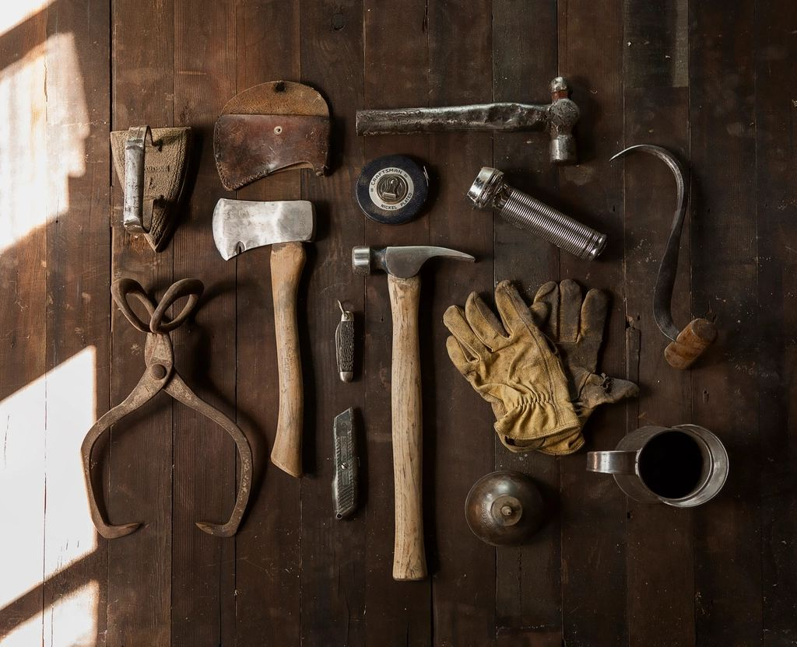

Escaliers & agencements
Droits, quart tournant ou suspendus, dessinés et fabriqués à l'atelier.
Escaliers, portes, dressings et agencements fabriqués dans notre atelier d'Yvetot, posés par ceux qui les ont faits.

Antoine Vasseur a repris l'atelier familial en 2019. Chaque pièce est dessinée chez vous, débitée et assemblée ici, puis posée par la même équipe. Pas de sous-traitance, pas de catalogue.
Nous travaillons le chêne, le frêne et le noyer issus de forêts gérées durablement, avec des finitions à l'huile ou au vernis mat.
Droits, quart tournant ou suspendus, dessinés et fabriqués à l'atelier.
Prise de cotes chez vous, plan validé avant fabrication.

Bois massif, double vitrage, cotes prises au millimètre.

Réparation et remise en état de vos meubles anciens, à l'outil traditionnel.
Robuste et intemporel. Le choix des escaliers et des parquets.
Clair et souple, idéal pour les intérieurs lumineux.
Sombre et précieux, pour une bibliothèque ou un meuble de caractère.
Pour les menuiseries extérieures sans entretien.
Décrivez-nous ce que vous imaginez. Antoine vous rappelle pour fixer un rendez-vous de prise de cotes.
06 39 98 10 21Atelier : 12 rue des Charpentiers, 76190 Yvetot
Du lundi au vendredi, 8 h – 18 h